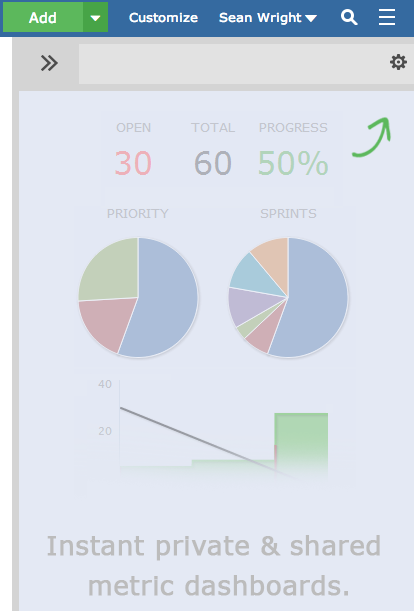
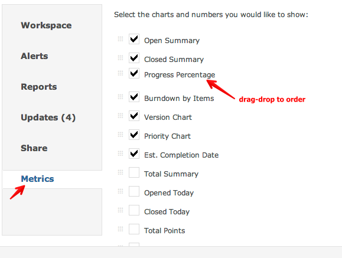
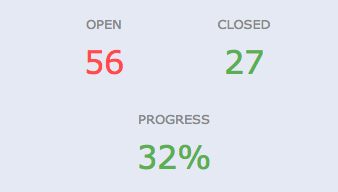
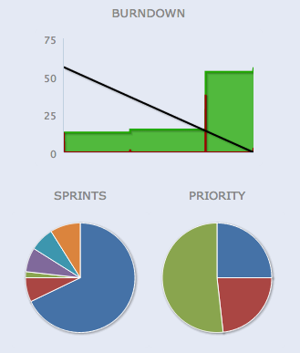

Every workspace can show metrics via the Side Bar.

You can select the metrics to display and drag-drop to specify which order they appear in.

You can show percentages, open, closed counts related to the data within the workspace.

Charting options such as burn-down, burn-up and data related pie charts are alsow available.

Various date fields can also be displayed.